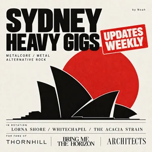
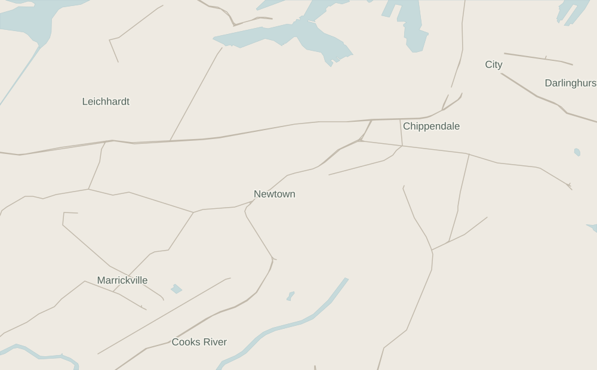

Skip to gigs

SYDNEY GIGS
Sydney Heavy Gigs
Press play, find your next night out.
Listen on Spotify ↗
26 Oct – 1 Nov
Featured week
Today
This weekend
26 Oct – 1 Nov · Sydney time
Map
Genres
Inner Sydney
All Sydney

Enable JavaScript to explore the locally bundled gig data.